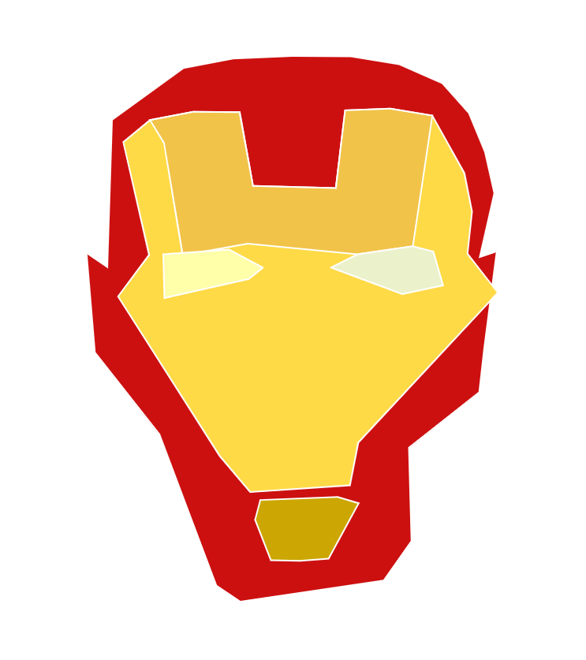
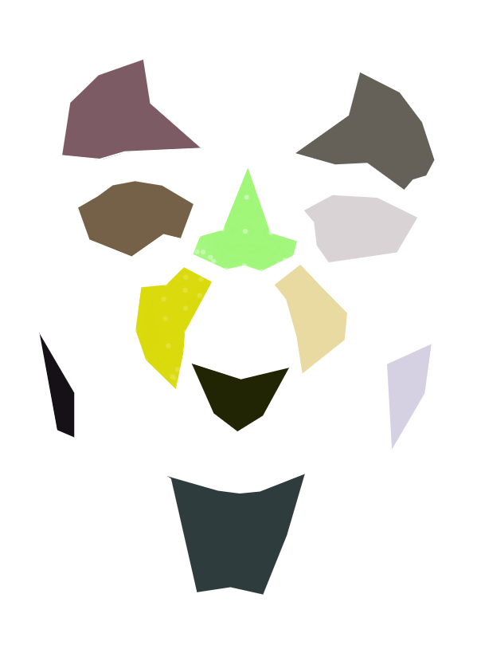
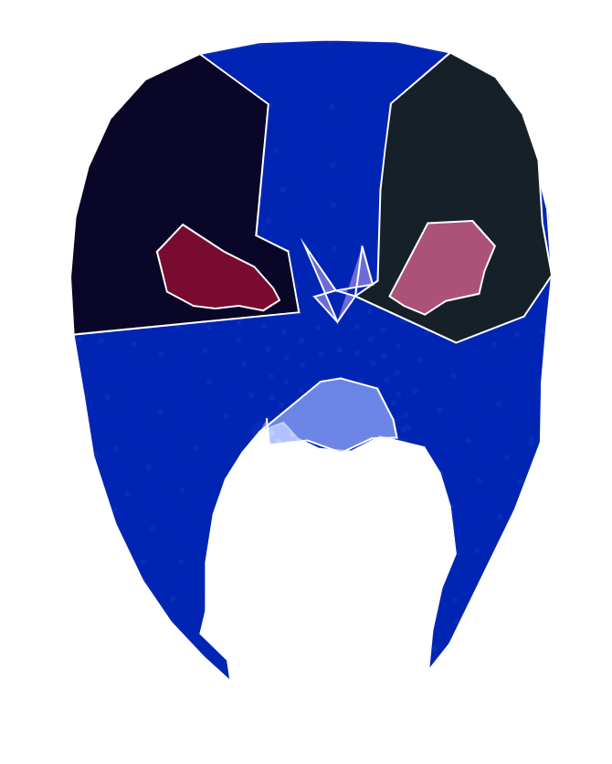
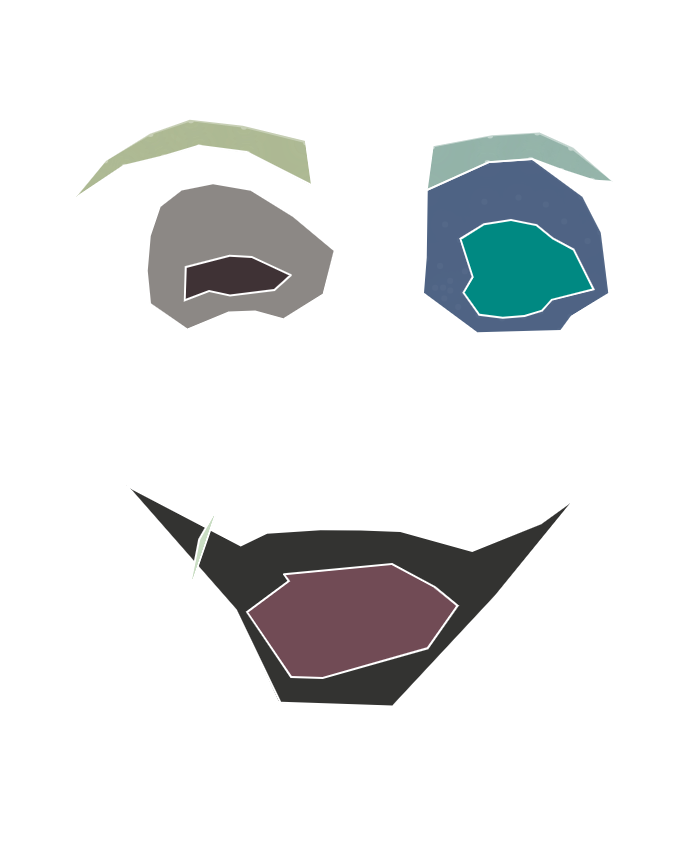

sorry about my face




(HOW THIS WORKS)
X
KEY
_.~"~._.~"~._.~"~._.~"~.__.~"~._.~"~._.~"~._
TO START--
press key "control" + "e"--> toggle on/off editing mode
TO EDIT--
press key "control" + "z"--> undo stroke
press key "control" +"c"--> create shape
press key "control" + "d"--> delete everything
TO SAVE--
press key "control" + "s"--> take a screenshit
_.~"~._.~"~._.~"~._.~"~.__.~"~._.~"~._.~"~._
(NEED A PROMPT?)
X
your face is ruined
_.~"~._.~"~._.~"~._.~"~.__.~"~._.~"~._.~"~._
Today has been a bad day.
A very bad day.
You ask why? Well I guess I'll tell you.
---------------
My hair got
by
, and they didn't apologize! Next, as I was heading to
, a(n)
poked my eyes so hard, I cried
. As I was in
, my nose was pinched by a very
old lady, and she had the
smile on her face. What a cute old lady. What a day it's been! I haven't even mentioned the
that stung my mouth, making it swell
times the size of
.
Man, I can't wait to get home and sleep.
---------------
That is why all I can say to you is, sorry for my face.
---------------
Using the webcam tool, draw your bad day mask.